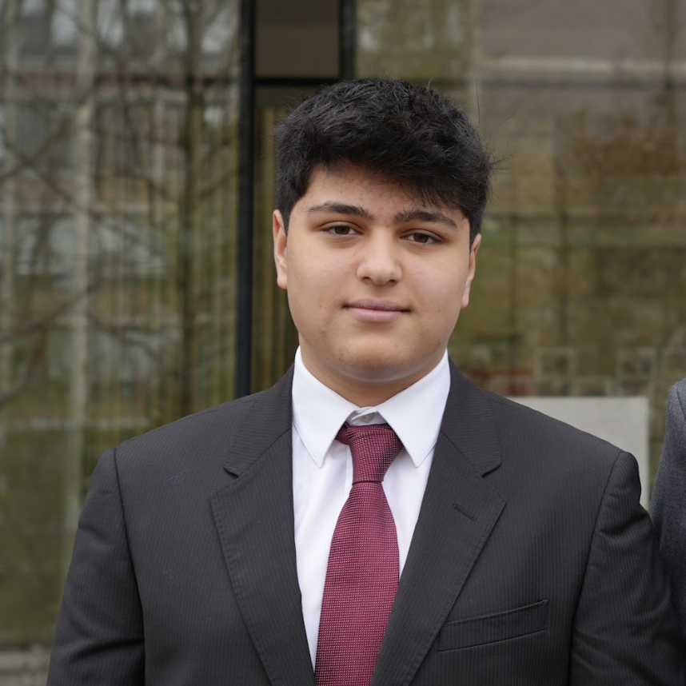

2027
Erasmus University Rotterdam
BSc² Econometrics and Economics.

Profile
2027
BSc² Econometrics and Economics.
Current
Student in Amsterdam with a focus on economics, technology, and international affairs.
2025
Secretary of Finance for MUNAICS 2025, the official Model United Nations conference of Amsterdam International Community School.
2023-2024
Delegated at MaasMUN and participated in Amsterdam MUN conferences, including chair and resolution roles listed on mymun.
Notable projects
A product in development for drivers, built around a practical mobile-first experience.
An economics-focused project exploring useful ways to work with macroeconomic context.
I am continuing to build and test new ideas across software, data, and consumer products.
Next
I am continuing to explore new ideas at the intersection of software, economics, and products that solve practical problems.